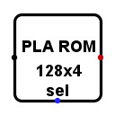
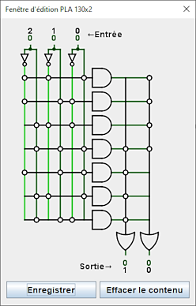
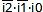
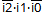
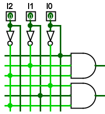

Réseau logique programmable PLA
Réseau logique programmable PLA
| Librairie : | Input/Output-Extra |
| Introduction : | 2.15 in Logisim ITA Component |
| Apparence : |  |
Comportement
Le Réseau logique programmable (PLA) va présenter sur sa sortie le résultat d'une fonction logique combinatoire. Si une des entrées est en erreur (E) ou indéfini (U) il présentera sur les sorties concernées l'état d'erreur (E). Il existe dans la librairie Entrée/Sortie un composant PLA différent plus organisé comme une ROM.
Après avoir défini le nombre de lignes en entrée avec l'attribut Largeur de donnée en entrée et le nombre de lignes en sortie avec l'attribut Largeur de donnée en sortie vous pouvez activer cette fenêtre en cliquant sur la propriété Contenu en effectuant un clic droit sur le PLA pour ouvrir le menu contextuel et sélectionnez le menu | | Modifier le contenu |.

Ce circuit est réaliser pour calculer la somme des minterms d'une fonction . Dans la matrice de gauche,vous pouvez cliquer sur les intersections pour connecter les valeurs ou leur complément aux portes AND pour construir les minterms.
Par exemple dans la figure ci-dessus la première ligne à gauche est programmée pour effectuer le minterms de  et pour la seconde ligne .
Le panneau représente une version simplifiée du schéma, vous devez comprendre le résultat de la programmation des deux premières lignes comme celui-ci

Dans la matrice de droite, vous cliquez aux intersections pour préciser les fonctions dont vous désirez realiser la somme avec les portes OR. Comme précédemment le panneau simplifie le schema et il faut voir des portes OR avec de multiples entrées.
Broches
- A l'est
- Entrée : Un bus d'entrée qui reçoit les valeurs pour la fonction programmée. Il aura une largeur de donnée en bit égal à la propriété Largeur de donnée entrée.
- A l'ouest
- Sortie : Un bus de sortie qui fournit le résultat de la fonction programmée. Il aura une largeur de donnée en bit égal à la propriété Largeur de donnée sortie.
Attributs
- Largeur de donnée en entrée
- Définis la largeur de donnée en bit de l'entrée.
- Nombre de portes ET
- Définis le nombre de portes ET, c'est le nombre de mintermes utilisés pour la fournir la solution des fonctions.
- Largeur de donnée en sortie
- Définis la largeur de donnée en bit de la sortie.
- Étiquette
- Le texte de l'étiquette associée à la porte.
- Police de l'étiquette
- La police avec laquelle l'étiquette doit être rendue.
- Étiquette visible
- Si l'étiquette est affichée ou non.
- Contenu
- Ouvre la fenètre de programmation du contenu.
- Polarité du sélect
- Détermine si le signal Select active le PLA au niveau haut (1) ou au niveau bas (0)
Comportement de l'outil pousser
Aucun.
Comportement de l'outil texte
Permets de modifier l'étiquette associée au composant.
Retour à Référence de la bibliothèque